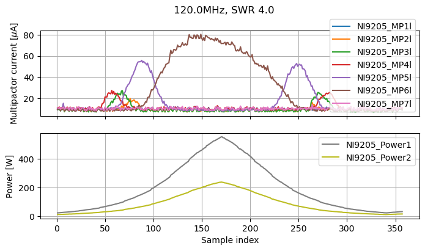
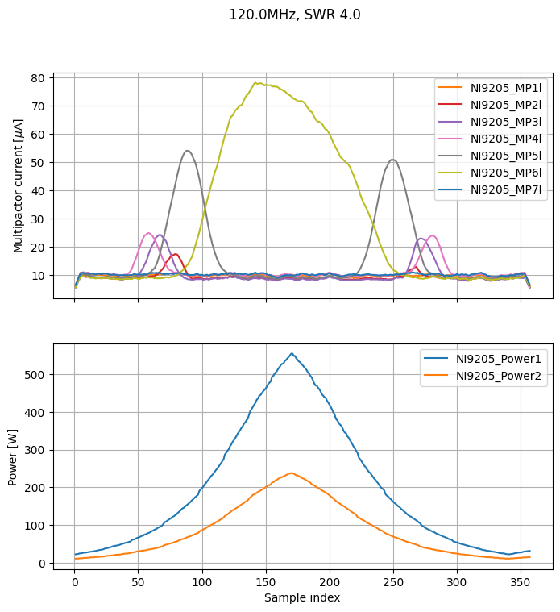

Plot signals measured by the instruments
Generic libraries:
[1]:
from functools import partial
from pathlib import Path
import tomllib
Other libraries required for this notebook:
[2]:
from multipac_testbench.src.multipactor_test import MultipactorTest
import multipac_testbench.src.instruments as ins
from multipac_testbench.src.util.post_treaters import running_mean
Define the project path, load the configuration.
[3]:
project = Path("../data/test")
config_path = Path(project, "testbench_configuration.toml")
with open(config_path, "rb") as f:
config = tomllib.load(f)
[4]:
results_path = Path(project, "120MHz-SWR4.csv") # send email placais@lpsc.in2p3.fr to get the file
multipactor_test = MultipactorTest(results_path,
config,
freq_mhz=120.,
swr=4.,
sep=',')
To plot you just need to do:
[5]:
to_plot = (ins.CurrentProbe, ins.Power)
exclude = 'NI9205_E1',
figsize = (8, 4)
_ = multipactor_test.sweet_plot(*to_plot, exclude=exclude, figsize=figsize)

A common operation is to smoothen the current. You can do so with:
[6]:
current_smoother = partial(
running_mean,
n_mean=10,
mode='same',
)
multipactor_test.add_post_treater(
current_smoother,
ins.CurrentProbe,
)
[7]:
axes = multipactor_test.sweet_plot(*to_plot, exclude=exclude, figsize=figsize)
